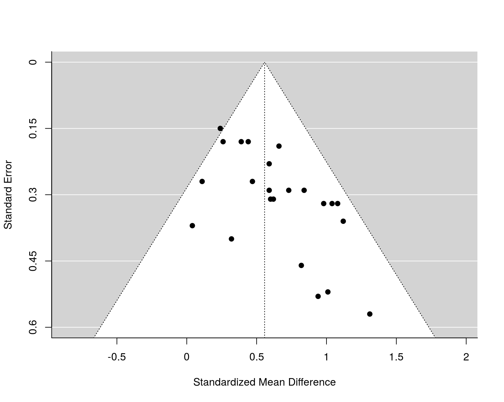

dat.baskerville2012.RdResults from 23 studies on the effectiveness of practice facilitation interventions within the primary care practice setting.
dat.baskerville2012
The data frame contains the following columns:
| author | character | study author(s) |
| year | numeric | publication year |
| score | numeric | quality score (0 to 12 scale) |
| design | character | study design (cct = controlled clinical trial, rct = randomized clinical trial, crct = cluster randomized clinical trial) |
| alloconc | numeric | allocation concealed (0 = no, 1 = yes) |
| blind | numeric | single- or double-blind study (0 = no, 1 = yes) |
| itt | numeric | intention to treat analysis (0 = no, 1 = yes) |
| fumonths | numeric | follow-up months |
| retention | numeric | retention (in percent) |
| country | character | country where study was conducted |
| outcomes | numeric | number of outcomes assessed |
| duration | numeric | duration of intervention |
| pperf | numeric | practices per facilitator |
| meetings | numeric | (average) number of meetings |
| hours | numeric | (average) hours per meeting |
| tailor | numeric | intervention tailored to the context and needs of the practice (0 = no, 1 = yes) |
| smd | numeric | standardized mean difference |
| se | numeric | corresponding standard error |
Baskerville et al. (2012) describe outreach or practice facilitation as a "multifaceted approach that involves skilled individuals who enable others, through a range of intervention components and approaches, to address the challenges in implementing evidence-based care guidelines within the primary care setting". The studies included in this dataset examined the effectiveness of practice facilitation interventions for improving some relevant evidence-based practice behavior. The effect was quantified in terms of a standardized mean difference, comparing the change (from pre- to post-intervention) in the intervention versus the comparison group (or the difference from baseline in prospective cohort studies).
Baskerville, N. B., Liddy, C., & Hogg, W. (2012). Systematic review and meta-analysis of practice facilitation within primary care settings. Annals of Family Medicine, 10(1), 63--74. https://doi.org/10.1370/afm.1312
### copy data into 'dat' and examine data dat <- dat.baskerville2012 dat#> author year score design alloconc blind itt fumonths retention #> 1 Kottke et al. 1992 6 cct 0 1 1 19 83.0 #> 2 McBride et al. 2000 6 rct 0 0 0 18 100.0 #> 3 Stange et al. 2000 6 rct 0 0 0 24 NA #> 4 Lobo et al. 2004 6 rct 1 0 0 21 57.0 #> 5 Roetzhiem et al. 2005 6 crct 0 1 0 24 100.0 #> 6 Hogg et al. 2008 6 cct 0 0 1 6 87.0 #> 7 Aspy et al. 2008 6 cct 0 1 0 18 89.0 #> 8 Jaen et al. 2010 6 rct 0 1 0 26 86.0 #> 9 Cockburn et al. 1992 7 rct 0 0 0 3 79.0 #> 10 Modell et al. 1998 7 rct 0 0 0 12 100.0 #> 11 Engels et al. 2006 7 rct 1 0 1 12 92.0 #> 12 Aspy et al. 2008 7 rct 0 1 0 9 100.0 #> 13 Deitrich et al. 1992 18 rct 0 1 0 12 96.0 #> 14 Lobo et al. 2002 8 rct 1 0 1 21 100.0 #> 15 Bryce et al. 1995 9 rct 1 1 1 12 93.3 #> 16 Kinsinger et al. 1998 9 rct 1 1 0 18 94.0 #> 17 Solberg et al. 1998 9 rct 1 0 1 22 100.0 #> 18 Lemelin et al. 2001 9 rct 1 1 0 18 98.0 #> 19 Frijling et al. 2002 9 crct 1 1 1 21 95.0 #> 20 Frijling et al. 2003 9 crct 1 1 1 21 95.0 #> 21 Margolis et al. 2004 10 rct 1 1 1 30 100.0 #> 22 Mold et al. 2008 10 rct 1 1 1 6 100.0 #> 23 Hogg et al. 2008 12 rct 1 1 1 13 100.0 #> country outcomes duration pperf meetings hours tailor smd se #> 1 US 2 18 5.5 30.0 1.00 1 1.01 0.52 #> 2 US 4 12 NA 5.0 1.00 1 0.82 0.46 #> 3 US 35 12 20.0 4.0 1.50 1 0.59 0.23 #> 4 NL 16 21 5.0 15.0 1.00 1 0.44 0.18 #> 5 US 3 24 4.0 4.0 1.00 0 0.84 0.29 #> 6 Can 26 12 11.0 12.0 1.50 1 0.73 0.29 #> 7 US 4 18 3.0 3.0 6.00 1 1.12 0.36 #> 8 US 11 26 6.0 4.5 6.00 1 0.04 0.37 #> 9 Aus 2 2 40.0 2.0 0.25 0 0.24 0.15 #> 10 UK 1 12 13.0 3.0 1.00 0 0.32 0.40 #> 11 NL 7 5 NA 5.0 1.00 1 1.04 0.32 #> 12 US 1 9 6.0 18.0 6.00 1 1.31 0.57 #> 13 NL 16 21 20.0 15.0 1.00 1 0.59 0.29 #> 14 US 10 3 8.0 3.0 1.00 1 0.66 0.19 #> 15 US 4 12 12.0 1.0 15.00 0 0.62 0.31 #> 16 US 5 12 13.0 10.0 0.75 1 0.47 0.27 #> 17 US 10 22 11.0 4.0 3.00 1 1.08 0.32 #> 18 Can 13 18 8.0 33.0 1.75 1 0.98 0.32 #> 19 NL 7 21 20.0 15.0 1.00 0 0.26 0.18 #> 20 NL 12 21 20.0 15.0 1.00 1 0.39 0.18 #> 21 US 4 24 11.0 9.0 1.00 1 0.60 0.31 #> 22 US 6 6 8.0 18.0 4.00 1 0.94 0.53 #> 23 Can 53 12 14.0 9.0 0.75 1 0.11 0.27#> #> Random-Effects Model (k = 23; tau^2 estimator: DL) #> #> tau^2 (estimated amount of total heterogeneity): 0.02 (SE = 0.03) #> tau (square root of estimated tau^2 value): 0.13 #> I^2 (total heterogeneity / total variability): 20.15% #> H^2 (total variability / sampling variability): 1.25 #> #> Test for Heterogeneity: #> Q(df = 22) = 27.55, p-val = 0.19 #> #> Model Results: #> #> estimate se zval pval ci.lb ci.ub #> 0.56 0.06 8.70 <.01 0.43 0.68 *** #> #> --- #> Signif. codes: 0 ‘***’ 0.001 ‘**’ 0.01 ‘*’ 0.05 ‘.’ 0.1 ‘ ’ 1 #>#> Warning: Cannot compute exact p-value with ties#> #> Rank Correlation Test for Funnel Plot Asymmetry #> #> Kendall's tau = 0.4284, p = 0.0049 #>#> #> Regression Test for Funnel Plot Asymmetry #> #> Model: mixed-effects meta-regression model #> Predictor: standard error #> #> Test for Funnel Plot Asymmetry: z = 3.1763, p = 0.0015 #> Limit Estimate (as sei -> 0): b = 0.0519 (CI: -0.2615, 0.3653) #>### meta-regression analyses examining various potential moderators rma(smd, sei=se, mods = ~ score, data=dat, method="DL")#> #> Mixed-Effects Model (k = 23; tau^2 estimator: DL) #> #> tau^2 (estimated amount of residual heterogeneity): 0.0211 (SE = 0.0288) #> tau (square root of estimated tau^2 value): 0.1453 #> I^2 (residual heterogeneity / unaccounted variability): 22.94% #> H^2 (unaccounted variability / sampling variability): 1.30 #> R^2 (amount of heterogeneity accounted for): 0.00% #> #> Test for Residual Heterogeneity: #> QE(df = 21) = 27.2532, p-val = 0.1626 #> #> Test of Moderators (coefficient 2): #> QM(df = 1) = 0.3454, p-val = 0.5567 #> #> Model Results: #> #> estimate se zval pval ci.lb ci.ub #> intrcpt 0.6830 0.2183 3.1286 0.0018 0.2551 1.1109 ** #> score -0.0149 0.0253 -0.5877 0.5567 -0.0646 0.0348 #> #> --- #> Signif. codes: 0 ‘***’ 0.001 ‘**’ 0.01 ‘*’ 0.05 ‘.’ 0.1 ‘ ’ 1 #>#> #> Mixed-Effects Model (k = 23; tau^2 estimator: DL) #> #> tau^2 (estimated amount of residual heterogeneity): 0.0227 (SE = 0.0299) #> tau (square root of estimated tau^2 value): 0.1507 #> I^2 (residual heterogeneity / unaccounted variability): 23.78% #> H^2 (unaccounted variability / sampling variability): 1.31 #> R^2 (amount of heterogeneity accounted for): 0.00% #> #> Test for Residual Heterogeneity: #> QE(df = 21) = 27.5502, p-val = 0.1534 #> #> Test of Moderators (coefficient 2): #> QM(df = 1) = 0.0417, p-val = 0.8383 #> #> Model Results: #> #> estimate se zval pval ci.lb ci.ub #> intrcpt 0.5786 0.1041 5.5588 <.0001 0.3746 0.7827 *** #> alloconc -0.0275 0.1348 -0.2041 0.8383 -0.2917 0.2366 #> #> --- #> Signif. codes: 0 ‘***’ 0.001 ‘**’ 0.01 ‘*’ 0.05 ‘.’ 0.1 ‘ ’ 1 #>#> #> Mixed-Effects Model (k = 23; tau^2 estimator: DL) #> #> tau^2 (estimated amount of residual heterogeneity): 0.0226 (SE = 0.0298) #> tau (square root of estimated tau^2 value): 0.1502 #> I^2 (residual heterogeneity / unaccounted variability): 23.65% #> H^2 (unaccounted variability / sampling variability): 1.31 #> R^2 (amount of heterogeneity accounted for): 0.00% #> #> Test for Residual Heterogeneity: #> QE(df = 21) = 27.5032, p-val = 0.1548 #> #> Test of Moderators (coefficient 2): #> QM(df = 1) = 0.0695, p-val = 0.7921 #> #> Model Results: #> #> estimate se zval pval ci.lb ci.ub #> intrcpt 0.5809 0.0972 5.9752 <.0001 0.3903 0.7714 *** #> blind -0.0349 0.1325 -0.2635 0.7921 -0.2946 0.2248 #> #> --- #> Signif. codes: 0 ‘***’ 0.001 ‘**’ 0.01 ‘*’ 0.05 ‘.’ 0.1 ‘ ’ 1 #>#> #> Mixed-Effects Model (k = 23; tau^2 estimator: DL) #> #> tau^2 (estimated amount of residual heterogeneity): 0.0224 (SE = 0.0298) #> tau (square root of estimated tau^2 value): 0.1495 #> I^2 (residual heterogeneity / unaccounted variability): 23.49% #> H^2 (unaccounted variability / sampling variability): 1.31 #> R^2 (amount of heterogeneity accounted for): 0.00% #> #> Test for Residual Heterogeneity: #> QE(df = 21) = 27.4459, p-val = 0.1566 #> #> Test of Moderators (coefficient 2): #> QM(df = 1) = 0.0360, p-val = 0.8496 #> #> Model Results: #> #> estimate se zval pval ci.lb ci.ub #> intrcpt 0.5496 0.0926 5.9355 <.0001 0.3681 0.7310 *** #> itt 0.0250 0.1319 0.1897 0.8496 -0.2336 0.2836 #> #> --- #> Signif. codes: 0 ‘***’ 0.001 ‘**’ 0.01 ‘*’ 0.05 ‘.’ 0.1 ‘ ’ 1 #>#> #> Mixed-Effects Model (k = 23; tau^2 estimator: DL) #> #> tau^2 (estimated amount of residual heterogeneity): 0.0230 (SE = 0.0304) #> tau (square root of estimated tau^2 value): 0.1516 #> I^2 (residual heterogeneity / unaccounted variability): 23.62% #> H^2 (unaccounted variability / sampling variability): 1.31 #> R^2 (amount of heterogeneity accounted for): 0.00% #> #> Test for Residual Heterogeneity: #> QE(df = 21) = 27.4927, p-val = 0.1551 #> #> Test of Moderators (coefficient 2): #> QM(df = 1) = 0.0004, p-val = 0.9849 #> #> Model Results: #> #> estimate se zval pval ci.lb ci.ub #> intrcpt 0.5601 0.1451 3.8605 0.0001 0.2757 0.8444 *** #> duration 0.0002 0.0088 0.0190 0.9849 -0.0171 0.0174 #> #> --- #> Signif. codes: 0 ‘***’ 0.001 ‘**’ 0.01 ‘*’ 0.05 ‘.’ 0.1 ‘ ’ 1 #>#> #> Mixed-Effects Model (k = 23; tau^2 estimator: DL) #> #> tau^2 (estimated amount of residual heterogeneity): 0.0074 (SE = 0.0252) #> tau (square root of estimated tau^2 value): 0.0863 #> I^2 (residual heterogeneity / unaccounted variability): 9.14% #> H^2 (unaccounted variability / sampling variability): 1.10 #> R^2 (amount of heterogeneity accounted for): 58.32% #> #> Test for Residual Heterogeneity: #> QE(df = 21) = 23.1124, p-val = 0.3380 #> #> Test of Moderators (coefficient 2): #> QM(df = 1) = 3.5474, p-val = 0.0596 #> #> Model Results: #> #> estimate se zval pval ci.lb ci.ub #> intrcpt 0.3717 0.1084 3.4281 0.0006 0.1592 0.5843 *** #> tailor 0.2434 0.1292 1.8835 0.0596 -0.0099 0.4967 . #> #> --- #> Signif. codes: 0 ‘***’ 0.001 ‘**’ 0.01 ‘*’ 0.05 ‘.’ 0.1 ‘ ’ 1 #>#> Warning: Studies with NAs omitted from model fitting.#> #> Mixed-Effects Model (k = 21; tau^2 estimator: DL) #> #> tau^2 (estimated amount of residual heterogeneity): 0 (SE = 0.0237) #> tau (square root of estimated tau^2 value): 0 #> I^2 (residual heterogeneity / unaccounted variability): 0.00% #> H^2 (unaccounted variability / sampling variability): 1.00 #> R^2 (amount of heterogeneity accounted for): 100.00% #> #> Test for Residual Heterogeneity: #> QE(df = 19) = 17.1739, p-val = 0.5781 #> #> Test of Moderators (coefficient 2): #> QM(df = 1) = 7.3013, p-val = 0.0069 #> #> Model Results: #> #> estimate se zval pval ci.lb ci.ub #> intrcpt 0.7318 0.0997 7.3429 <.0001 0.5365 0.9272 *** #> pperf -0.0137 0.0051 -2.7021 0.0069 -0.0236 -0.0038 ** #> #> --- #> Signif. codes: 0 ‘***’ 0.001 ‘**’ 0.01 ‘*’ 0.05 ‘.’ 0.1 ‘ ’ 1 #>#> #> Mixed-Effects Model (k = 23; tau^2 estimator: DL) #> #> tau^2 (estimated amount of residual heterogeneity): 0.0075 (SE = 0.0239) #> tau (square root of estimated tau^2 value): 0.0867 #> I^2 (residual heterogeneity / unaccounted variability): 9.72% #> H^2 (unaccounted variability / sampling variability): 1.11 #> R^2 (amount of heterogeneity accounted for): 57.90% #> #> Test for Residual Heterogeneity: #> QE(df = 21) = 23.2607, p-val = 0.3302 #> #> Test of Moderators (coefficient 2): #> QM(df = 1) = 3.8574, p-val = 0.0495 #> #> Model Results: #> #> estimate se zval pval ci.lb ci.ub #> intrcpt 0.4453 0.0773 5.7644 <.0001 0.2939 0.5968 *** #> I(meetings * hours) 0.0073 0.0037 1.9640 0.0495 0.0000 0.0146 * #> #> --- #> Signif. codes: 0 ‘***’ 0.001 ‘**’ 0.01 ‘*’ 0.05 ‘.’ 0.1 ‘ ’ 1 #>